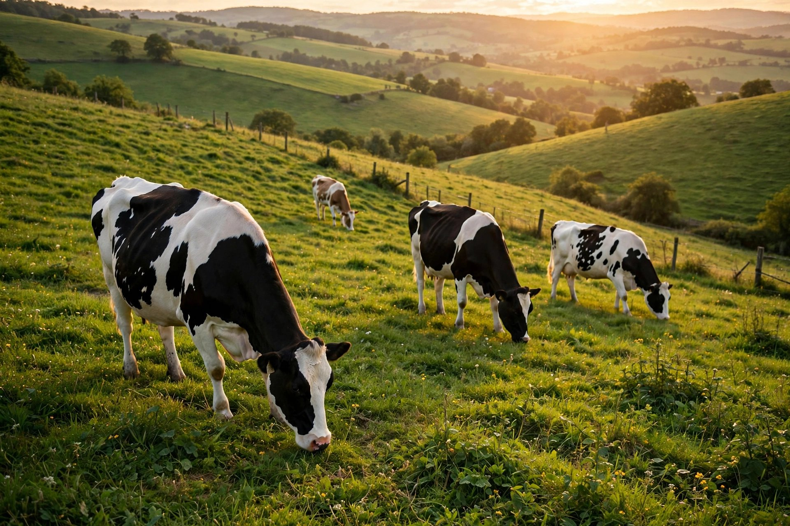

Medicina veterinaria para el campo: salud del hato, reproducción y producción sostenible, con visitas a tu finca.


Atención integral para bovinos, equinos, porcinos y aves de corral.
Atención veterinaria completa en tu campo, con unidad móvil y diagnóstico en sitio.
Planes sanitarios, vacunación, desparasitación y control de enfermedades del hato.
Control reproductivo, diagnóstico de preñez e inseminación artificial.
Asesoría en alimentación y manejo para una producción eficiente y sostenible.
Exámenes clínicos y de laboratorio para detectar a tiempo cualquier problema.
Atención de emergencias en campo a cualquier hora, cualquier día.
Nuestro ganado, fotos de nuestro equipo.
Cargando galería…
Cuéntanos qué animales tienes y armamos un plan sanitario a tu medida.
Escríbenos por WhatsApp